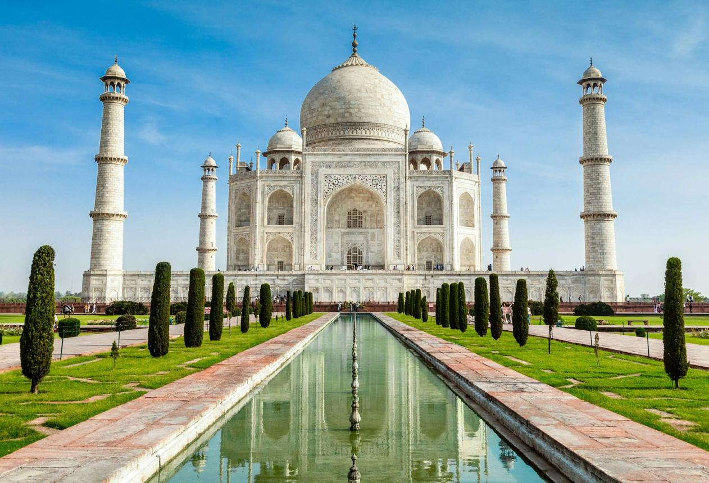
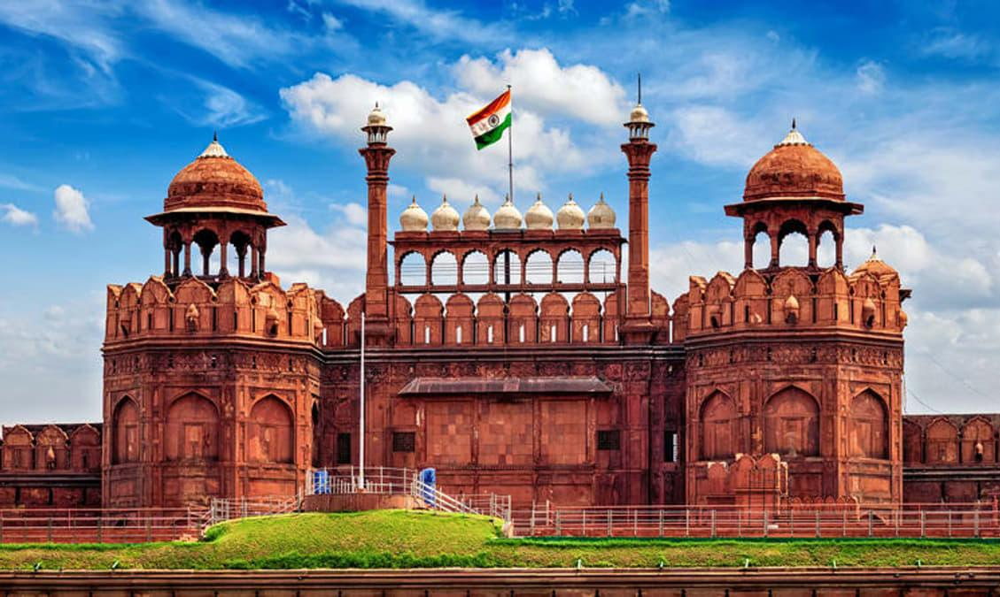
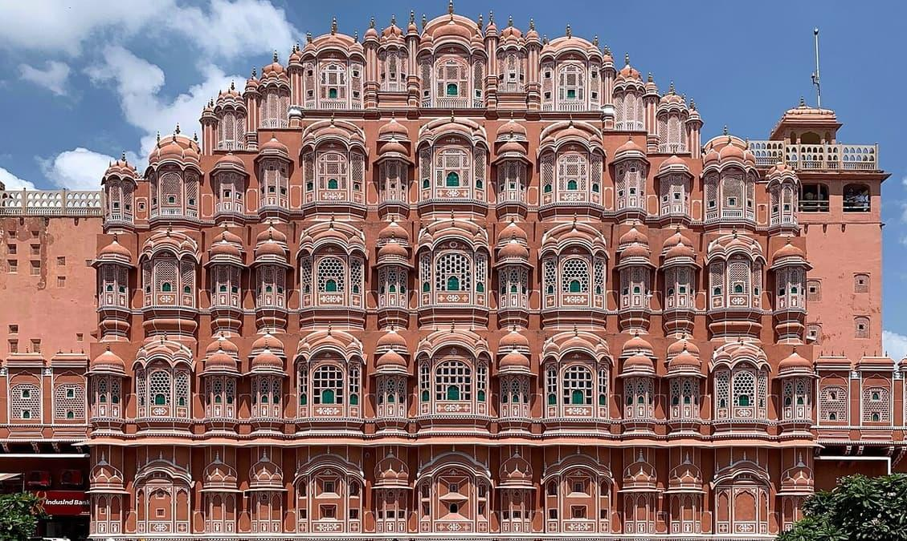
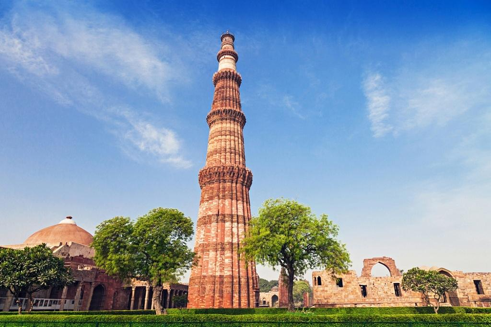
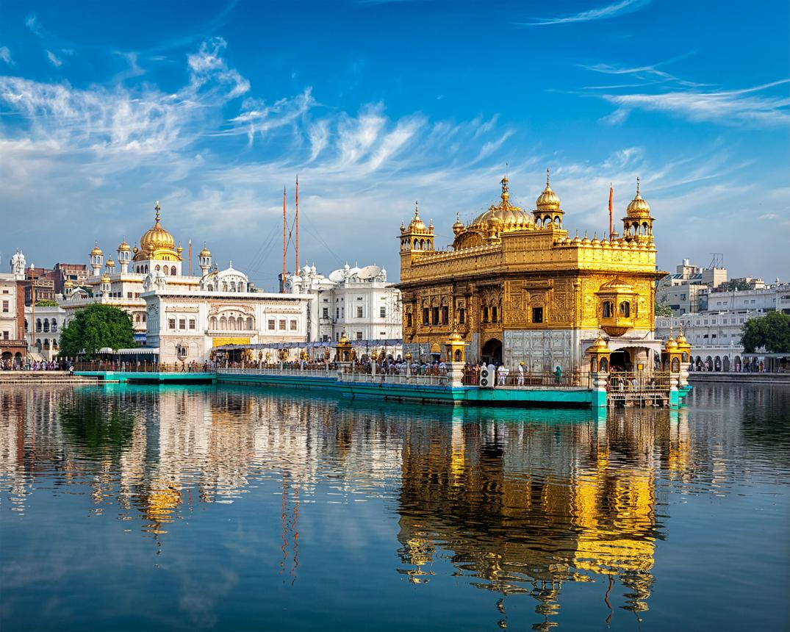
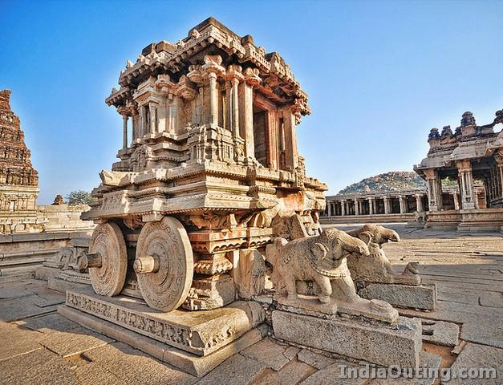
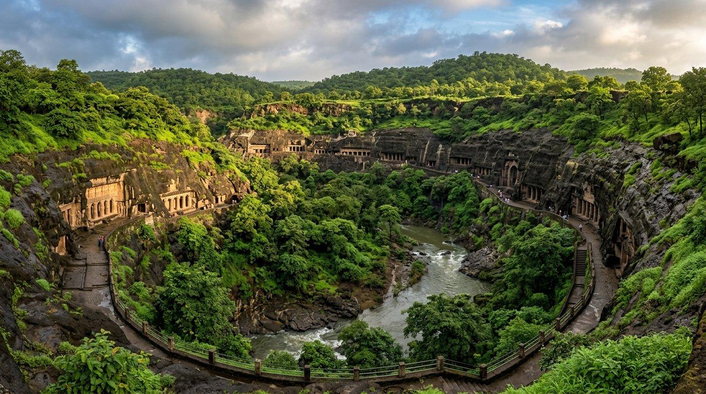
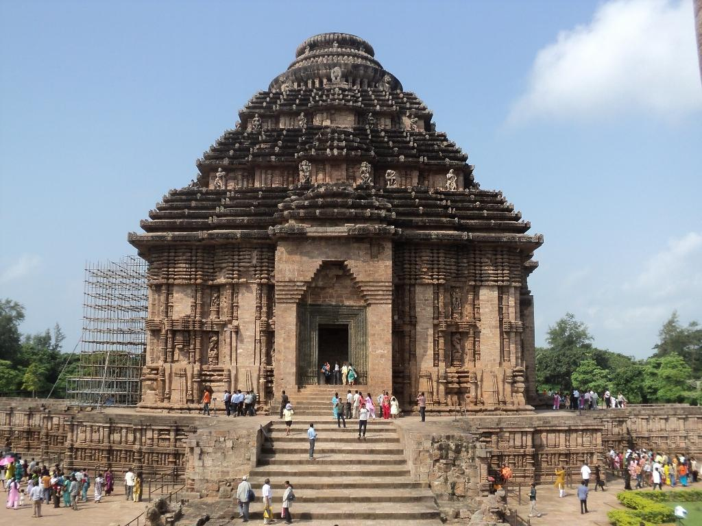
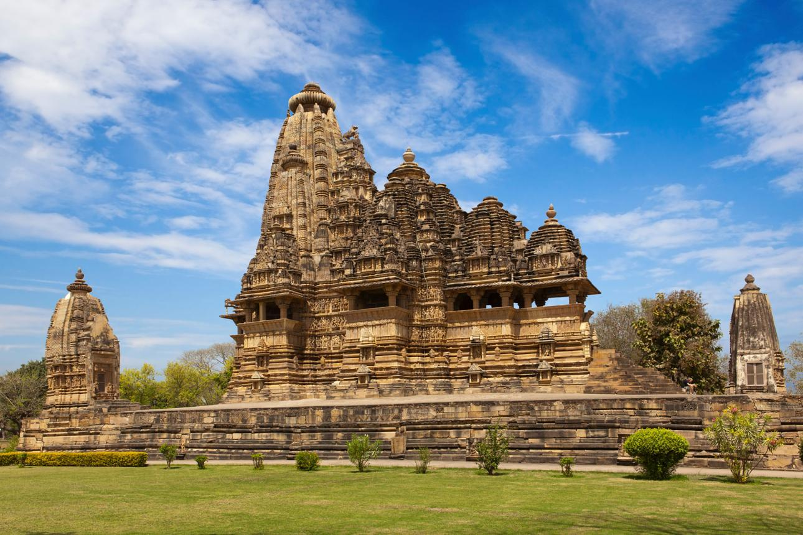

Agra, Uttar Pradesh
Taj Mahal
Built by Mughal Emperor Shah Jahan in memory of Mumtaz Mahal, this white marble mausoleum is celebrated for its architectural beauty.
MUGHAL ARCHITECTUREEXPLORE INDIA'S HISTORICAL TREASURES
Journey through centuries of history, remarkable architecture, and cultural landmarks that tell the story of India.
Explore MonumentsA JOURNEY THROUGH HISTORY
India's monuments represent the artistic, architectural, and historical achievements of different dynasties and civilizations. From magnificent forts to ancient temples, each monument preserves a unique part of India's cultural identity.
EXPLORE THE LANDMARKS
Discover some of India's most remarkable historical and architectural destinations.

Agra, Uttar Pradesh
Built by Mughal Emperor Shah Jahan in memory of Mumtaz Mahal, this white marble mausoleum is celebrated for its architectural beauty.
MUGHAL ARCHITECTURE
Delhi, India
Constructed by Emperor Shah Jahan, the Red Fort is a historic fortress that reflects the grandeur of Mughal architecture.
HISTORICAL FORT
Jaipur, Rajasthan
Known as the Palace of Winds, this five-storey structure is famous for its distinctive facade and numerous small windows.
RAJPUT ARCHITECTURE
Delhi, India
This famous minaret is an outstanding example of Indo-Islamic architecture and is part of the Qutb complex.
INDO-ISLAMIC ARCHITECTURE
Amritsar, Punjab
Harmandir Sahib is a revered Sikh place of worship known for its golden exterior and message of equality and service.
SIKH HERITAGE
Karnataka, India
The remains of the Vijayanagara Empire showcase remarkable temples, stone structures, and historic architectural achievements.
ANCIENT HERITAGEWORLD HERITAGE
Discover India's extraordinary landmarks recognised for their cultural, historical, and natural significance.

Ancient rock-cut caves famous for their Buddhist paintings, sculptures, and architecture.

A remarkable 13th-century temple designed in the shape of the Sun God's chariot.

Renowned for their detailed stone carvings and exceptional temple architecture.